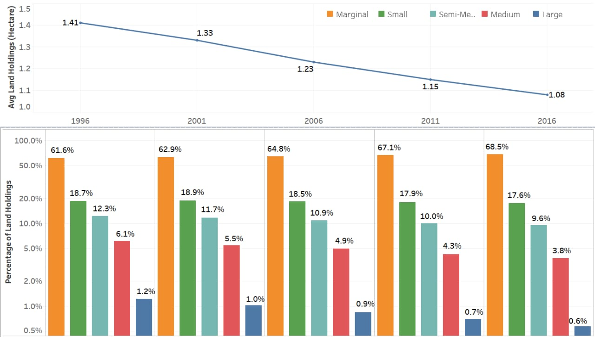

Major Factors Ailing Agriculture in India
- Fragmented Land Holdings - The seemingly abundance of net sown area in India pales into insignificance when we see that it is divided into small, scattered and economically unviable holdings. The average size of the land holdings is decreasing over the years and marginal land holdings accounted for a 68.5% of the total holdings in 2016.
- Irrigation - Irrigation is the artificial supply of water to overcome deficiencies in rainfall for crops. Good irrigation coverage is essential in India due to seasonal and uncertain rainfall. It helps to improve food security, reduce dependence on monsoons, improve agricultural productivity, promote crop diversification, and create rural job opportunities.
- Net Sown Area - The physical extent of land on which crops are sown and harvested is known as net sown area.
- Gross Sown Area - The cumulative area sown once or more than once in a year is the gross sown area. For example, a region is counted twice in gross sown area when crop is cultivated on the area of land twice in a year.
- Gross Irrigated Area (%) - Gross Irrigated Area is the total area under crops irrigated once and/or more than once in a year.
- Availability of Capital -
Agricultural credit is considered as one of the most basic inputs for conducting all agricultural development programs. In India, there is an immense need for proper agricultural credit as most of the farmers are very poor. The main suppliers of money to the farmer were the moneylenders and commission agents who used to charge high rate of interest and purchase the agricultural produce at very low price. However rural credit scenario has undergone a significant change as institutional agencies such as Cooperative Banks, Commercial Banks, Cooperative Credit Agencies, and some Government Agencies are extending loans to farmers on easy terms.
The ratio of Agricultural Credit outstanding to Agricultural GDP jumped from 0.6% in 1951 to 21.76% in 1988. This was achieved mostly on account of nationalization of banks and introduction of RRBs which expanded the reach of formal credit in the country. However, the reverse trend in the ratio started from 1991 and it fell to 13.34% in 1999. Post 1999 the ratio increased steeply and reached up to 39.55% in 2007, which indicates that introduction of Kisan Credit Card was a big booster for agricultural credit. After 2007 the ratio has risen to 51.56% in 2018.
It has been estimated that non-institutional sources of credit (mostly local moneylenders) were dominant in 1951, accounting for 90% of the outstanding debt of cultivator households, but their share declined sharply to 37% in 1981. After 1981, the rate of decline slowed down, and the share of non-institutional sources was 28% in 2015.
- Availability of Fertilizers - Increase in the consumption of fertilizers is a barometer of agricultural prosperity. However, there are practical difficulties in providing sufficient manures and fertilizers in all parts of India. According to the Impact Study of Soil Health Card Scheme; India consumes about 25.6 million tons of fertilizers, mostly Nitrogen (17 million tons) followed by Phosphorous (6 million tons) and Potassium (2.5 million tons). The current NPK ratio is 6.7:2.4:1, which is highly skewed towards Nitrogen as against the ideal ratio of 4:2:1. The variation in fertilizer usage across states is also huge.
- Inadequate Storage Facilities - As of 2020 the total storage capacity available with Central and State agencies for storing food grains was 755.94 Lakh Metric Tons; while there were cold storages with a capacity of 374.25 Lakh Metric Tons available for storing perishable produce like fruits and vegetables (mostly privately owned). However, the storage facilities in the rural regions of India are mostly inadequate. Due to this, farmers are compelled to sell their produce immediately after the harvest at low prices. A study by National Academy of Agricultural Sciences (NAAS) said storage is the major cause of post-harvest losses for all kinds of food in India, especially fruits and vegetables. India faces a critical deficiency of cold storage capacity which belies the potential of the food processing industry. Food Corporation of India estimated post-harvest losses for all kinds of food in India at around 15%.
- Poor Transport Facilities and Lack of Mechanization - Lack of cheap and efficient means of transportation is a major problem often forcing farmers to sell their produce in local markets at a significantly lower rate. Also, little or no use of machines in various agricultural activities like ploughing, sowing, irrigating, weeding, harvesting, threshing etc. in the case of small and marginal farmers results in huge wastage of human labor and in low yields. Agricultural implements and machinery are a crucial input for efficient and timely agricultural operations for increased production.

(Marginal Land Holdings - Below 1 Hectare, Small Land Holdings - 1-2 Hectares, Semi-Medium Land Holdings - 2-5 Hectares, Medium Land Holdings - 5-10 Hectares, Large Land Holdings - Above 10 Hectares)
It has been observed that there is a need for educating farmers for using soil - specific fertilizers. It has also been suspected that the skewed usage of fertilizers is because of inappropriate marketing of certain fertilizers which fetch farmers a higher subsidy.

It is expected that use of scientific storage methods, privatization and development of larger and better distributed rural storage infrastructure will help improve the storage capacities and stop wastages.
References -
- Handbook of statistics on Indian states(by RBI)
- Report of the Internal Working Group to Review Agriculture Credit (2019)
- 10 major agricultural problems of india and their possible solutions
- Chemical fertilizer consumption increased by about 16 in the last six years
- Cold Storage Facilities in the Country
- Agriculture warehousing in India - Data, Statistics and opportunities
- Foodgrain storage losses in india: Waste not, want not